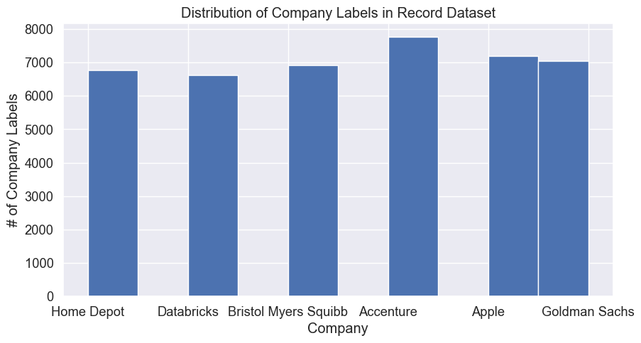
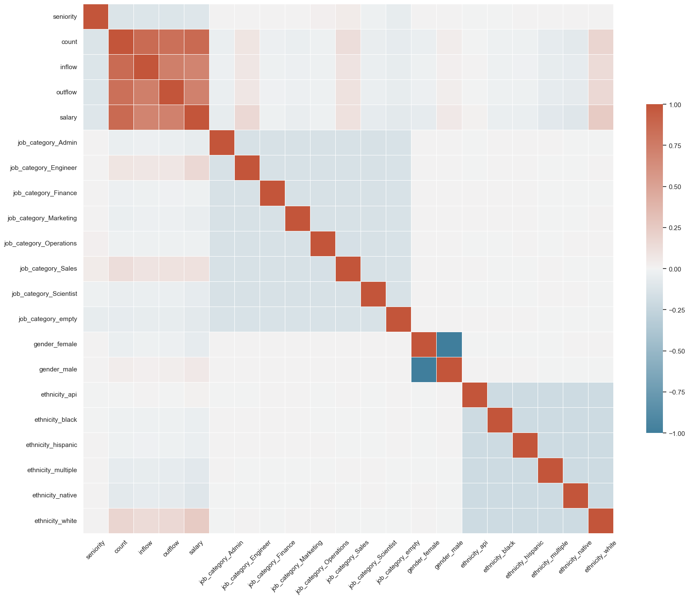
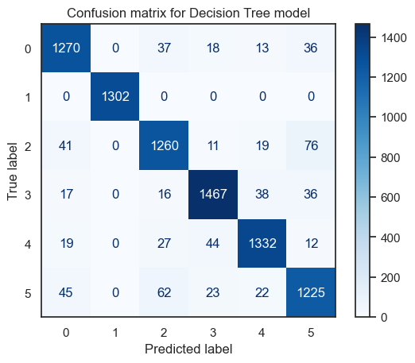

I used a decision tree algorithm to predict what company a given person is from based on record employment data from Revelio Labs. In general, a decision tree is a type of supervised machine learning that categorizes and makes predictions based on how a previous set of questions were answered, where each new answer directs you to a new “node” until a final decision is made by the algorithm. In the context of this data, it means that the algorithm will predict which company (the y variable) a person belongs to based on their answers to various employment demographic questions (the X variable, which contains many categories).
To feed data into a decision tree model, I have to first ensure that my data is clean. Previously, I already cleaned my record dataset and imputed all NAs, which only existed in the salary column, with medians of each NA’s respective “gender” category. Since the record data still contained some categorical variables which cannot be read by the decision tree model, I converted the categories “gender”, “ethnicity”, “job_category”, and “company” to dummy variables in this section. When the data was clean enough to run a decision tree model, I divided the data into variables X and y: X consists of most feature variables, while y is the list of companies. I split a portion (80%) of the X and y into the “training” category and a smaller portion (20%) into the “test” category.
Then, I fed the training data into the model; in other words, we used the training data, which is the majority of the dataset, to train the decision tree model. The algorithm uses a metric called the Gini index to evaluate each variable. Specifically, the Gini index calculates the probability of guessing the right category or company using only the variable we have right now. Once it comes up with a category, the algorithm then moves on to the next node in the tree. Eventually we will reach the final set of nodes, which is is what leads to a final classification, or “decision”, of the tree.
How will we utilize the remaining 20% of the dataset? I’m glad you asked! Since we used the training data to train the model, it would almost be redundant to use the training data to test how accurate the model is. Hence, we will apply the model to the test data to see how accurate the model is with the unfamiliar data and validate the accuracy of the decision tree model.
Set up data
# Load essential librariesimport pandas as pdimport numpy as npimport seaborn as sns import matplotlib.pyplot as plt# Read csv filedf = pd.read_csv('../data/cleaned_wf_demo.csv', index_col=0)print(df.head())
company seniority job_category gender ethnicity count \
1 Home Depot 4 Admin female api 6.649361
2 Home Depot 3 empty male api 0.114460
3 Home Depot 5 Scientist male api 0.005991
4 Home Depot 1 Engineer male api 192.650237
5 Home Depot 3 Engineer female api 84.062919
inflow outflow salary
1 0.027259 0.020727 6.296236e+05
2 0.000265 0.000297 8.108699e+03
3 0.001000 0.000000 5.206698e+02
4 10.110865 6.249455 1.124800e+07
5 1.707721 1.253758 8.842880e+06
Clean data for Decision Trees
# Convert categorical variables to dummy variables using pd.get_dummies# Dummies for job_categorydummies = pd.get_dummies(df['job_category']).rename(columns=lambda x: 'job_category_'+str(x))df = pd.concat([df, dummies], axis=1) #add back into the dataframedf.drop(['job_category'], inplace=True, axis =1) #remove job_category column# Repeat for genderdummies = pd.get_dummies(df['gender']).rename(columns=lambda x: 'gender_'+str(x))df = pd.concat([df, dummies], axis=1) #add back into the dataframedf.drop(['gender'], inplace=True, axis =1) #remove gender column# Repeat for ethnicitydummies = pd.get_dummies(df['ethnicity']).rename(columns=lambda x: 'ethnicity_'+str(x))df = pd.concat([df, dummies], axis=1) #add back into the dataframedf.drop(['ethnicity'], inplace=True, axis =1) #remove ethnicity column# Repeat for companydummies = pd.get_dummies(df['company']).rename(columns=lambda x: 'company_'+str(x))df = pd.concat([df, dummies], axis=1) #add back into the dataframe# Confirm new column names and that there are no NAsprint(df.columns)print(df.isnull().sum())
The classes that we are trying to predict are commpany labels “Home Depot”, “Databricks”, “Bristol Myers Squibb”, “Accenture”, “Apple”, and “Goldman Sachs”. Since these are categorical, we only need to count the frequency of these labels in the “comapany” column of the dataset. Based on the graph below, the labels are pretty evenly distributed, with Accenture having the highest number of labels. We have a majority class of Accenture, but even then the labels are pretty balanced, which means the accuracy score might be pretty high for all classes since we have a large number and similar amounts of data for each class.
## Examine class distributionsns.set(font_scale=1.2)# Visualize class distributionfig, ax = plt.subplots(figsize=(10,5))df['company'].hist()ax.set_title("Distribution of Company Labels in Record Dataset")ax.set_xlabel("Company")ax.set_ylabel("# of Company Labels")# save picturefig1 = ax.get_figure()fig1.savefig("../501-project-website/images/DT_record_labels_distribution.png")

Baseline model
To understand how accurate my upcoming model is, I created a baseline model using a uniform random number generation process. Since in the actual decision tree model the result has 6 categories, we input 6 different labels for this baseline model. The classifier’s accuracy, precision, recall, and fscores are below.
## Baseline modelimport randomfrom collections import Counterfrom sklearn.metrics import accuracy_scorefrom sklearn.metrics import precision_recall_fscore_supportdef generate_label_data(class_labels, weights,N=10000): y=random.choices(class_labels, weights = weights, k = N)print("-----GENERATING DATA-----")print("unique entries:",Counter(y).keys()) print("count of labels:",Counter(y).values()) # counts the elements' frequencyprint("probability of labels:",np.fromiter(Counter(y).values(), dtype=float)/len(y)) # counts the elements' frequencyreturn y## Generate random classifierdef random_classifier(y_data): ypred=[]; max_label=np.max(y_data);#print(max_label)for i inrange(0,len(y_data)): ypred.append(int(np.floor((max_label+1)*np.random.uniform(0,1))))print("-----RANDOM CLASSIFIER-----")print("count of prediction:",Counter(ypred).values()) # counts the elements' frequencyprint("probability of prediction:",np.fromiter(Counter(ypred).values(), dtype=float)/len(y_data)) # counts the elements' frequencyprint("accuracy",accuracy_score(y_data, ypred))print("precision, recall, fscore,",precision_recall_fscore_support(y_data, ypred))# Random classifierprint("\MULTI-CLASS: UNIFORM LOAD")y=generate_label_data([0,1,2,3,4,5],[1/6, 1/6, 1/6, 1/6, 1/6, 1/6],10000)random_classifier(y)
To decide on which feature to use, I calculated and ploted a correlation matrix of all the possible feature variables, which is basically every column except for our target “company” column. The correlation of the features are strong along the diagonal, which makes sense because each feature is itself which means each feature has a very strong correlation to itself. Since the job category, gender, and ethnicity groups of features consist of dummy variables, that means male and female, in the context of this dataset, have a -1 correlation with each other. After running this matrix, I decided to leave the count, inflow, and outflow variables out because they are too closely correlated to each other and may not yield distinct and meaningful predictions.
# Identify feature and target columns target_cols = [i for i in df.columns if'company'in i]feature_cols = df.columns[1:22]# Display heat-map for the correlation matrixcorr = df[feature_cols].corr();print(corr.shape)sns.set_theme(style="white")f, ax = plt.subplots(figsize=(20, 20)) # Set up the matplotlib figurecmap = sns.diverging_palette(230, 20, as_cmap=True) # Generate a custom diverging colormap# Draw the heatmap with the mask and correct aspect ratiosns.heatmap(corr, cmap=cmap, vmin=-1, vmax=1, center=0, square=True, linewidths=.5, cbar_kws={"shrink": .5})# cbar_kws --> removing the shrink will space them out betterplt.xticks(rotation=45)plt.show()
(21, 21)

Prepare data for Decision Tree model
## SET X AND Y# y: convert df['company'] string labels to dummy integerslabels=[];y=[]for label in df["company"]:if label notin labels: labels.append(label)print("index =",len(labels)-1,": label =",label)for i inrange(0,len(labels)):if(label==labels[i]): y.append(i)y = np.array(y)# XX = df.drop(['company', 'company_Accenture', 'company_Apple', 'company_Bristol Myers Squibb', 'company_Goldman Sachs', 'company_Home Depot', 'inflow', 'outflow', 'count'], axis =1)# Double checkprint(X.shape,y.shape)
index = 0 : label = Home Depot
index = 1 : label = Databricks
index = 2 : label = Bristol Myers Squibb
index = 3 : label = Accenture
index = 4 : label = Apple
index = 5 : label = Goldman Sachs
(42336, 19) (42336,)
In a Jupyter environment, please rerun this cell to show the HTML representation or trust the notebook. On GitHub, the HTML representation is unable to render, please try loading this page with nbviewer.org.
DecisionTreeClassifier(random_state=0)
# Import sklearnfrom sklearn.utils.fixes import sklearn# Fit model to training datamodel.fit(X_train, y_train) # Predict on X_trainy_train_pred = model.predict(X_train)# Predict on X_testy_test_pred = model.predict(X_test)
Model Tuning
To find the most accurate model, I itereated the model through tree depths 1 through 30. We want to find the optimal depth so that we don’t overfit (model is fit to the training set very well but does not fit the test set well) or underfit (model is not fit to the training set very well but fits the test set well). As seen in the table below, it looks like the higher the number of tree depths, the higher the accuracy scores in general. As a result, I am specifying a high tree depth for the model.
The decision tree model produced has an accuracy score of 99.2% on the training set and 92.8% on the test set. Please see a visualization of the accuracy scores below. This accuracy score indicates that the model has a high quality fit - if anything, the model might be slightly overfitted because the accuracy for test data is lower by 7%, but a lower accuracy score for test data is expected and at the end of the day the model’s accuracy on the test set still exceeds the 85% threshold for a model to be considered accurate.
When we plot the decision tree, we can see that the model produced many nodes to generate such accurate predictions. However, one cost of this high level of accuracy is that the run-time is relatively long. Precisely, it took 3.5 minutes to generate this plot. That suggests that to improve the appicability of the model, we might want to tune it less and sacrifice some accuracy for efficiency, especially if we might apply the model on a large dataset.
Please also see a visualization of the confusion score below. The score is highest for label 3, which is “Accenture” - this makes sense because Accenture has the highest number of data points, which would imply a higher accuracy of prediction since there is more data to train the model on predicting the label “Accenture”. Generally speaking, the diagonal of the confusion matrix is dark blue whereas the other boxes are faintly colored, indicating that there is a high number of correct predictions.
# TEST ACCURACY# Training setprint("Training set")print("Accuracy: ", accuracy_score(y_train, y_train_pred) *100) #accuracy scoreprint("Number of mislabeled points: ", (y_train != y_train_pred).sum()) #mislabeled points# Test sety_test_pred = model.predict(X_test)print("Test set")print("Accuracy: ", accuracy_score(y_test, y_test_pred)*100) #accuracy scoreprint("Number of mislabeled points: ", (y_test != y_test_pred).sum()) #mislabeled points# Plotmodel_accuracies = pd.DataFrame({'Set':['Training set','Test set'], 'Accuracy (%)': [accuracy_score(y_train, y_train_pred) *100, accuracy_score(y_test, y_test_pred)*100]})sns.barplot(data=model_accuracies, x="Set", y="Accuracy (%)").set(title ='Accuracy of model for training vs test sets' )plt.savefig("../501-project-website/images/DT_record_accuracy.png")
Training set
Accuracy: 99.22640840911775
Number of mislabeled points: 262
Test set
Accuracy: 92.77279168634861
Number of mislabeled points: 612
/Users/cynthiang/opt/anaconda3/lib/python3.9/site-packages/sklearn/utils/deprecation.py:87: FutureWarning: Function plot_confusion_matrix is deprecated; Function `plot_confusion_matrix` is deprecated in 1.0 and will be removed in 1.2. Use one of the class methods: ConfusionMatrixDisplay.from_predictions or ConfusionMatrixDisplay.from_estimator.
warnings.warn(msg, category=FutureWarning)

Conclusions
In conclusion, I think this decision tree model is a high quality model due to the high accuracy scores for both training and test sets. In addition, the accuracy scores exceed the 85% threshold for a model to be considered accurate.
The fact that there is such a high correlation between the predicted and true labels, given features such as gender, ethnicity, and salary, show that each company has its own distinct workforce demographic––for better or worse. For example, in the feature selection graph, we see that of the six different ethnicity categories, the white category is most postiively correlated with salary and seniority, which reflects the differing race-based outcomes.
To explore further, I hope to see which companies are more correlated with different extents of various features. In addition, I hope that these results generate a clearer picture of how people from different genders and races experience different levels of employment outcomes, and provide a general impetus for companies to more intentionally prioritize diveristy, equity, and inclusion in their workforce.